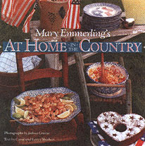

Mother's Kitchen
A sampler of one family's favorite recipes.
WHEN JANEE N ALETTA SARLIN SET out to collect a few of her family's recipes, she probably didn't know she would create a treasure for generations to come. And not just for her family.
Food From An American Farm (Simon & Schuster, $24.95) is a wonderful look at farm food, complete with trimmings. Reading this cookbook is as fun as eating "Best Frosted Chocolate Creams" and as satisfying as "Great-Grandmother Broadwater's Chicken and Biscuits." Sarlin intended to create a book that celebrated the life of an American farm. She ended up with a celebration of a way of cooking that has fallen too far out of fashion in these low-fat, cholesterol-free days. In Food from an American Farm, the day starts with a hearty meal of "Brown and White Breakfast Fries,"
"Stove-Top Omelet," and perhaps some "Homemade Sausage with Gram's Down Home Flavor." In these days of 101 new ways with NutraSweet, it's comforting to know that the only eggbeaters used in this book were in Grandma's hands, whipping up a hearty batch of "Farmer-Style Crumbled Bacon and Eggs."
Sarlin also shares with us the stories behind several recipes, many of which are as delightful as the recipes themselves. Her section on cookies (each recipe being her "absolute favorite cookie," says Sarlin with complete sincerity), is prefaced by a story concerning her mother's habit of licking an oatmeal batter-smeared bowl while doing a convincing horse imitation involving "chewing, snorting, neighing, and stomping around on all fours."
Sarlin's description of basic methods, along with her inclusion of master recipes, is very helpful to those who are rediscovering the food of their youth. After all, not all of us were fortunate enough to grow up with Gram's black book (an unlined hardcover that Sarlin's grandmother wrote her recipes in, often with no detailed methodology-just misspelled ingredients), including techniques for perfect "Potato-Water Bread" and a hearty "Beef Broth."
As culinary trends leave the lean-and-mean California cuisine of the '80s behind, it's refreshing to see that the continuing search for perfect preparation of wholesome and natural ingredients has now ended right where it all started-on the American farm.
In the following excerpt from her book, Janeen describes the meals-and the memories-that make farm life special.
Autumn Sandwiches
In October we served these aromatic hot sandwiches to the crew of corn pickers. When the men opened the sandwich bags, fragrant steam curled out. These delicious sandwiches also warmed their cold fingers.
If there was a large crew, we filled and wrapped all the sandwiches and placed them in a large, dry roasting pan. Mom covered the pan and heated them in a hot oven for approximately 10 minutes. I car ried the whole business out to the men.
Mom used a stewing chicken to make the filling, but I prefer a fat roasting chicken. Be sure to butter the sandwich buns generously on both sides before adding the hot chicken, so the chicken does not soak into the bread. I serve these sandwiches topped with a skewered sweet pickle on top of the bun. For a casual supper, add a tossed mixed green salad and crisp potato chips.
Recipe:
1 four-pound roasting chicken with fat and neck, but no giblets.
1-1 /2 teaspoons salt
1 teaspoon black pepper, freshly ground
1 carrot, peeled and sliced
1 medium onion, peeled and stuck with two cloves
2 stalks celery, sliced
1 /4 teaspoon salt
Dash cayenne pepper
1 /2 teaspoon black pepper
1 /2 cup green pepper, finely chopped
Cut chicken into pieces; place in large stockpot with lid (dark meat on the bottom and white meat on the top). Generously season with salt and pepper. Add carrot, onion, and celery to the meat. Cover with enough cold water to come 3/4 of the way up the meat. Cover pan and bring to a boil. Reduce heat and simmer for about 1 hour, turning over once or twice, or until well done (meat should fall off the bones).
When meat is done: Set strainer over large bowl; pour chicken, vegetables, and broth into the strainer. Shake off excess broth, then return broth collected in bowl to pot. Bring to a rolling boil and reduce broth until only 2 cups remain; this will take about 20 to 25 minutes. Set aside to cool and allow fat to surface.
Meanwhile: Separate chicken meat from skin, bones, and fat. Cut meat across grain into cubes 1-1/2 to 2 inches thick. Discard everything else. Place cubed chicken in bowl and set aside.
To assemble: Skim fat off broth and discard; pour reduced broth over chicken. Season chicken with salt, cayenne, black and green pepper; taste and correct seasoning.
To serve: Remove from heat and spoon large serving of chicken into buttered sandwich bun. Serve quickly.
To store: Place mixture in airtight container; refrigerate overnight or up to 4 days.
To reheat: Place seasoned chicken along with jellied broth in saucepan; cover and slowly bring to a boil. Serve as above.
Best Frosted Chocolate Creams
To me, Gram's chocolate creams tasted better then Mom's. I was positive that the reason had something to do with her pantry. It was filled with a combination of lavender, onion, garlic, and chocolate aromas.
My every visit was rewarded with some savory or sweet surprise.
Grams tried every variation of this recipe. "Best" was noted next to the list of ingredients for this cookie; no explanation necessary.
Chocolate was ever present at the conclusion of our family Christmas celebration. Uncle Buzz, a veteran chocoholic, and Uncle Roy, a devout lover of food in general, along with Dad-who was part and party to these shenanigans-egged each other on during dinner to see who could consume the most. Our family gatherings were not solemn affairs.
This soft, cake-like cookie melts in your mouth-a chocolate lover's idea of heaven.
Recipe:
Dough
1 /2 cup butter 1 cup sugar
2 eggs
2 ozs.(squares) unsweetened chocolate, melted and cooled
1 teaspoon vanilla
1 teaspoon baking soda
2-1/2 cups flour
3 /4 cup milk
Frosting
2 ozs. unsweetened chocolate
2 tablespoons butter
2 cups powdered sugar
2 teaspoons vanilla
2 teaspoons (approximately) heavy cream
60 pecan halves for garnish
Preheat oven to 400°.
Cream butter and sugar together until light and fluffy; add eggs, melted chocolate, and vanilla; mix well.
Combine soda and flour together. Alternately add flour mixture and milk to egg batter, beating well after each addition.
Drop by teaspoonfuls, 2 inches apart, onto ungreased baking sheets. Bake 8 to 10 minutes, or until dull on top and firm to the touch. Remove cookies from sheets immediately and cool on rack.
To frost: Melt chocolate and butter in saucepan; remove from heat. Stir in sugar, vanilla, and enough cream to become spreading consistency.
Frost cookies after they are completely cool (but the frosting should still be slightly warm). With table knife or small spatula, swirl frosting around top of cookie. Place a perfect pecan half on top before frosting is set.Let frosting set.
Store in cookie tin, placing waxed paper between layers of cookies. Can be kept 5 to 6 days in cool place. Do not freeze.
Dandelion Greens
2 quarts dandelion greens
3 slices bacon
1 tablespoons butter
1 cup hot water
1 tablespoon sugar
1 1/2 teaspoons
1/4 teaspoon salt
1/4 teaspoon black pepper, freshly ground ground
1/4 to 1/2 cup heavy cream
Wash greens, dry and reserve.
In stainless steel or enamel skillet, fry bacon until crisp. Remove bacon; drain on brown paper bag or towels and reserve. Stir flour into pan drippings, adding a bit of butter if necessary; cook until brown.
Whisk in water, stirring constantly; boil 3 to 4 minutes. Add sugar, vinegar, salt, and pepper; taste and correct seasonings. Add cream, as needed, to dress greens. Stir in greens and cook 4 to 5 minutes or until well wilted. Taste, and correct seasonings, if necessary.
Crumble reserved bacon and sprinkle on top. Serve with fried chicken and boiled or mashed potatoes. Or garnish the top, if you like, with 2 hard-boiled eggs, chopped; serve over toast. Serves 6. 6
SOME GOOD COOKS HAVE HUNDREDS OF cookbooks in their collections, some a trusted two or three. A few are even good enough to cook all our favorites from memory. But for those who enjoy adding a treasure or two to their repertoire each season, we recommend these country-inspired, fresh fall selections.
If you're like many people and cutting back a bit on beef, you've probably reached that point where the thought of another grilled chicken breast is ',I enough to send you screaming. Take heart a nd take a look at Lorraine Bodger's Chicken Dinners (Harmony Books). Arranged by season, Chicken Dinners details 24 seasonal menus featuring fowl. As elaborate as "Chicken Quenelles in Escarole Soup" and as simple as "Simple Skillet Chicken with Lemon and Thyme," Chicken Dinners is a wonderful source book for seasonal ideas and interesting combinations. For those who thought they had the perfect fried chicken recipe, word has it that the "Beer-Batter-Fried Chicken
Drumsticks" are the best around.
Serve with "Grilled Vegetables" and corn on the cob and be able to look at a chicken again.
Mary Emmerling is no stranger to country-style or country cooking. Her previous books have included many coffee-table quality country-classic furnishing guides as well as great collections of recipes from her family and friends. Despite all this, it is best to approach Mary Emmerling's At Home in the Country (Clarkson Potter) as the eye candy that it is. Every recipe emphasizes the fresh and wonderful, although one can't help but wonder who's idea of country cooking in cludes arugula, cantaloupe, and prosciutto salad. Granted, Mary Emmerling is to country cooking what Ralph Lauren is to country-style but unlike most who like to think they invented a generations-old genre, Emmerling can't help but improve on it a little.
Heartland: The Best of the Old and the New from Midwest Kitchens (also Clarkson Potter) is, plainly, the best cookbook devoted to the Midwest in quite a while. From award-winning author Marcia Adams, Heartland "brings to life the food and folkways of America's sprawling Midwest." Indeed. Adams divided the book by state (Illinois, Indiana, Iowa, Michigan, Minnesota, Missouri, Ohio, Wisconsin) and, keeping true to her title, focuses on traditional regional delights (Ohio's peanut butter "buckeyes") and local nouveau specialties ("Corn Chowder" from Wisconsin's L'Etoile restaurant). As a transplanted Michigander, I was thrilled to see a page devoted exclusively to pasties (tasty portable meals in pastry) and early fall favorites like apple fritters and baked cherry dumplings. It was especially nostalgic to hear Adams describe the practice of "planking" Michigan whitefish. Often served in seafood houses, planking involves baking the fish on a wooden slab garnished with piped potatoes, and then serving the whole business as is with a lemon and some melted butter-a whole meal on a what would seem to be a cutting board. As they say, if you buy only one cookbook this year...
For everyone who faces another year of the school lunchbox battle, The Creative Lunchbox by Ellen Klavan (Crown Publishers) comes to the rescue. As too many parents know, an empty box doesn't mean an eaten box. You can't be in the lunchroom with them, so how do you stop Lauren or Jason from trading their tofu for Twinkies? A quick skim through The Creative Lunchbox will help. Klavan knows all the tricks (cut raw veggies into interesting shapes, like curly celery sticks) to entice young eaters, and enough flavorful combinations to keep them interested (bananawich anyone?). More than just nuttytious and tasty, Klavan keeps the 3-S's theory close to heart: Brown bagging should be squish-proof, sog-proof, and spoil-proof. After all, anything can be fresh and appealing at 7:30 a.m. (especially through bleary eyes) but under the harsh glare of lunchroom lights (not to mention the critical gaze of fellow classmates), bag lunches often fall short. Klavan's recipes for sandwiches, salads, hot meals, and drinks, however, should keep even the fussiest eater happy--well, at least until Halloween.
Also of Interest: Got a craving for a bottle Butterfield's Birch Beer and Pines Cream,-Soda! Need a nibble of Norman's Nordic Kringle? Fret no further. You won't have to get without whatever homemade local edible you fell in love with on your last pip downs back country road now that Ford Finds: America's Best Local Foods and the People Who Produce Them by Jane and Michael Stern With Collins) has been revised, ups and enlarged to include 250 of the original 340 items plus 150 all new vendors. Each entry includes descriptions not only of the foods themselves, but also of the people who, make them and how they are made, as well as information on how to visit and how to order by mail. So should you 1e short some Sanitary Fish Market Restaurant Hush Puppy Mix or even need a recipe for R & R brownies, you'll find it.
|
Author Sarlin celebrates a way of cooking that has fallen too far out of fashion |
|
|
|
 |
|
|